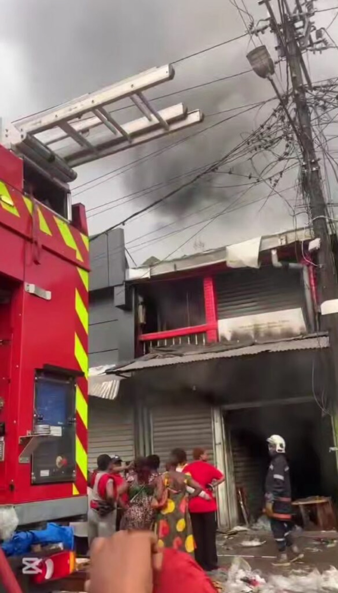

INCENDIE DÉVASTATEUR AU MARCHÉ FOUMI À NEW BELL : UN BILAN HUMAIN ET MATÉRIEL LOURD À DÉPLORER
Un incendie détruit le marché Foumi à Douala : des centaines de commerçants sinistrés cherchent à se relever.

Un incendie ravage le marché Foumi à Douala : des vies et des moyens de subsistance en péril
Un violent incendie a détruit dans la nuit de mardi à mercredi le marché Foumi, situé derrière l’ancien marché des femmes à New Bell, Douala. Les secours sont intervenus en urgence, mais le bilan est déjà lourd.
Vers 23h50, un incendie d’une violence inouïe s’est déclaré dans les allées du marché Foumi, un lieu central pour les commerçants et les habitants du quartier de New Bell à Douala. Les flammes se sont rapidement propagées dans ce marché réputé pour son activité commerciale intense, réduisant en cendres des années de travail et des moyens de subsistance pour des centaines de familles.
Si les autorités n’ont pas encore communiqué de bilan officiel, des témoignages recueillis sur place évoquent des commerçants ayant perdu leurs stocks et leurs outils de travail. Des boutiques de tissus, d’électroménager et de produits alimentaires auraient été particulièrement touchées. Les pertes matérielles pourraient se chiffrer en centaines de millions de FCFA, selon des premières estimations non confirmées.
Les pompiers de Douala sont intervenus rapidement, mais l’ampleur des dégâts rend l’évaluation difficile en pleine nuit. Les secours ont travaillé sous haute tension, craignant une propagation vers les habitations voisines.
Les habitants de New Bell sont sous le choc après cette catastrophe. Le marché Foumi est un lieu emblématique de la vie économique et sociale du quartier, où se croisent vendeurs ambulants, artisans et clients. « Tout a brûlé en quelques minutes, il ne reste rien », témoigne un commerçant sous le coup de l’émotion.
Les associations de commerçants du marché central appellent déjà à une solidarité immédiate pour aider les victimes à se relever.
À ce stade, aucune cause officielle n’a été déterminée. Les enquêtes sont en cours pour comprendre l’origine du sinistre. Plusieurs hypothèses sont évoquées : un court-circuit, un acte de malveillance, ou encore un accident lié à l’utilisation de groupes électrogènes, fréquents dans ce type d’environnement.
Les autorités municipales et les services de sécurité ont lancé des investigations pour faire la lumière sur cet incendie, qui rappelle tragiquement l’incendie du marché Mokolo à Yaoundé en 2022, où des dizaines de commerçants avaient tout perdu.
Banc d'essai typographique (contenu factice)
Intertitre de niveau 3
Intertitre de niveau 4
Une citation longue ne doit pas être traitée comme une exergue : elle reste au corps du texte.
Le mariage transcrit fait l'objet d'une mention en marge des actes de naissance des deux époux. La transcription est demandée par les époux, ou par l'un d'eux, auprès de l'officier d'état civil du lieu de célébration, sur présentation des pièces établissant la réalité de l'union coutumière.
Texte factice, de la longueur d'un extrait de loi
Une phrase courte, elle, devient une exergue.
| Situation | Reconnue par la loi | Preuve |
|---|---|---|
| Mariage civil | Oui | Acte de mariage |
| Mariage coutumier transcrit | Oui | Mention en marge des actes de naissance |
| Concubinage | Non | Aucune |